Spring is here!
With it comes good vibes, shopping for new clothes, having a few drinks outside and simply grinning like an idiot because the cold weather has gone.
So, in between all of this goodness, why not give your email marketing something to grin about as well?
As Dale Carnegie recounts in How to Win Friends and Influence People, one habit of successful people is “spending time on self-reflection”, reviewing your successes and mistakes so you can improve. After all, without looking at what you’ve done how can you do better on what you’ll do going forward?
Life is, after all, one big A/B test! Spend an hour reviewing your email marketing campaigns and you’ll directly affect your businesses success.
To help you out, here’s a list of eight things you can review for your email marketing campaigns as we head into spring.

Click for full size, or embed this image:
1. Don’t leave subscribers on the table
What if you could double the number of people you were emailing?
When was the last time you really dug in and reviewed the methods you’re using to collect emails? Think about these
1. Get your customers’ email addresses early
Sometimes it’s more effective to get a customer’s email address than to let them bounce entirely.
You have to be smart: getting a customer’s email address at the start of checkout or early in a signup process might affect a funnels direct conversion but the email marketing campaigns you can send to new potential customers may more than compensate any direct drop in conversions.
Take this example from Tumblr. Rather than putting all of the necessary fields on one page they have their signup process and are able to get their customers’ emails up front: this would increase the conversions on the initial page and getting some information about their users is useful for Tumblr, even if they don’t complete the second two steps.
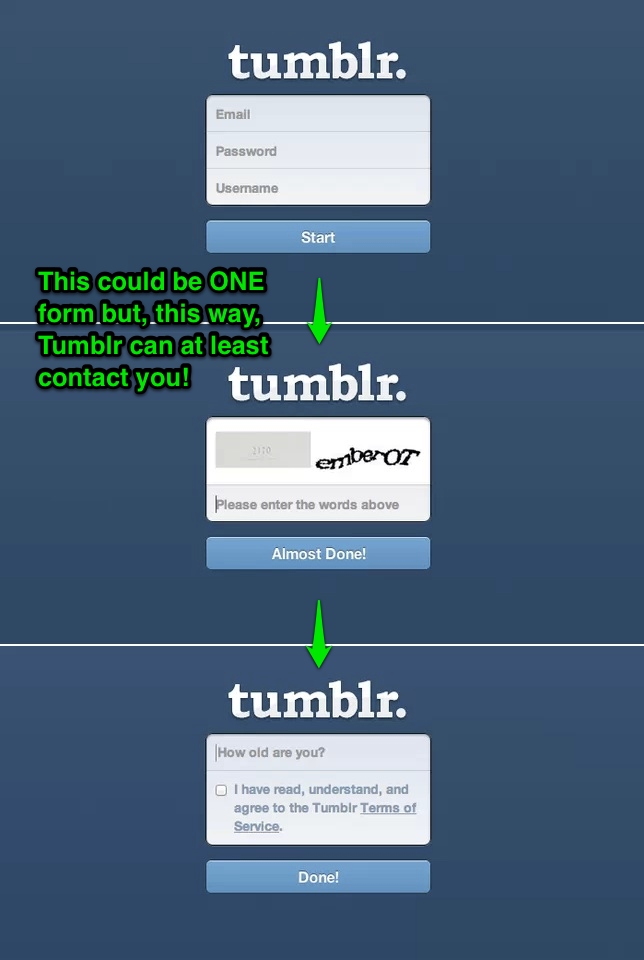
Test collecting your customers’ important details right up front.
2. Change your call to action (CTA) for return visitors
KISSmetrics have recently been targeting customers who return to their website with a popover offering them a free case study in exchange for their email address:
This is a great idea. If a customer has already visited your site and hasn’t signed up or purchased there is every chance they’re not ready to do so. Instead, next time they return consider offering them something else of value (in exchange for their email address).
This tactic could work equally well for blogs, SaaS businesses and eCommerce stores.
Don’t just limit behavioural targeting to your emails: get clever with popups and site design for different user segments.
3. A/B test different popups, headers and styles
This is particularly useful when optimising for blog subscriptions.
For example, I’m currently testing these two headers on the Vero blog right now (you would have gotten one of these variations above):
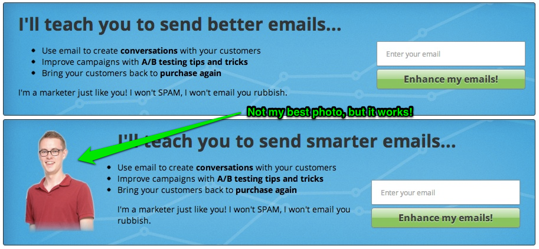
I’m not yet sure what will win but the header bar is really effective, much more so than the old subscribe form I had on the right hand side of this page.
Check out PadiAct or, if you’re on WordPress, my favorite new plugin ‘Scroll Triggered Box’.
Here’s a few examples I’ve seen recently from around the web:
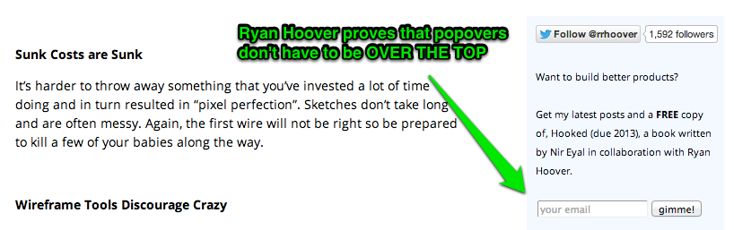
Ryan’s popover is more subtle than usual.
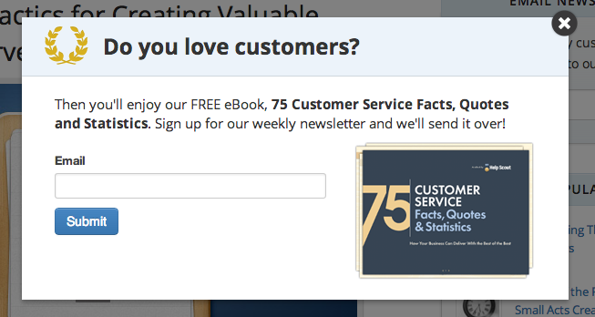
HelpScout collect customers’ email addresses on blog post pages only, as this is where their readers are more engaged.
Find what format works for your customers with some savvy A/B tests (Visual Website Optimizer is great for this) and stick with them.
4. Pro tip: Ask your current subscribers to share
If you’ve got a loyal following then perhaps you can ask them to help share your product or service.
Sacha Grief recently wrote about his DIY Email Referral setup, which helped him drive new subscribers for his Sidebar email marketing list by asking his current subscribers to share.
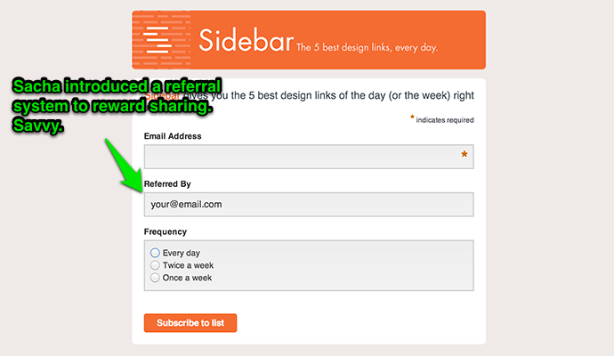
How can you encourage your current subscribers or customers to help you grow?
It’s easy to get caught up in constantly looking for external ways to increase your footprint but it can be equally worthwhile testing things with the loyal following you already have!
2. LOOK! Make sure your recipients take the action you want
Let’s not muck around. Here’s a bunch of examples of good calls to action:
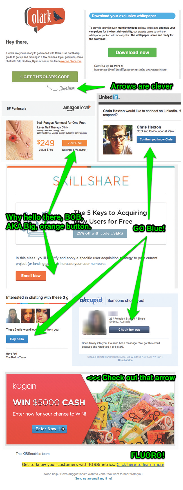
These three things are what the above examples do well:
- Make it stand out: big buttons, lots of colour. Make sure the call to action stands out against the surrounding context. Consider using tables instead of images to get maximum compatibility.
- Focus on the benefit: focus on the benefits of taking the action, not the ‘what’ of doing the action.
- Take the user where they expect to be taken: no point ‘tricking’ someone into clicking if they don’t actually engage on the other side.
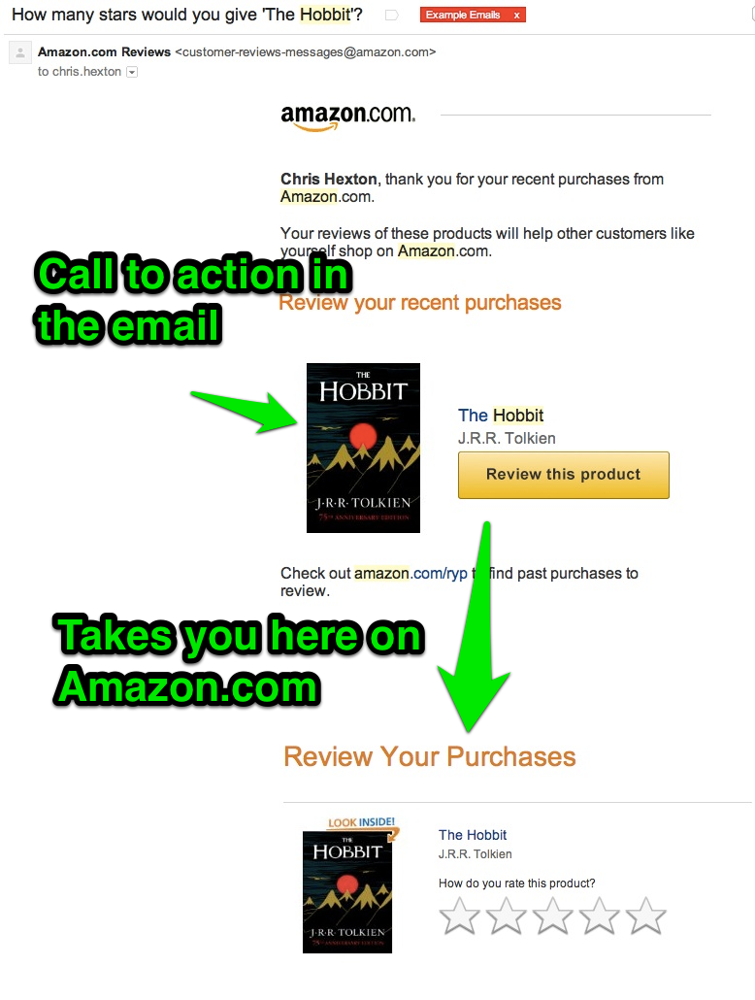
…yet, even those tricks are pretty standard compared with some of the ideas you see businesses using when optimising their landing pages. So here are a few other things you don’t see in the examples above or in many emails, for that matter (hint – use these to get ahead):
- Line of sight: lots of landing pages employ photos of people looking at the call to action. Try something like this in your emails:

This is a great example from Vision 6’s guide to Calls to Action that convert.
- Arrows! Only one of the examples above has a big arrow (nice one, Olark).
What about CTAs in plain text or simple text emails?
No problemo! When writing plain text emails, ensure there is actually a call to action and repeat it. Ideally the call to action will be a link and not just some text (so you can track it).
Your CTA should be simple like “Grab this now” or “Start doing XYZ today”. Always focus on the outcome, the benefit.
This is also where I recommend the secret of the “PS”, or postscript. Check out this post on how customers actually read your emails for some tips on what to do with the PS and some different formats you can use…but the most important thing to remember is to re-iterate your CTA in the PS! Customers will always read it.
3. Enough is enough! How much email is too much email?
One of the most common mistakes businesses make is not connecting with their customers regularly. It can be scary to email your customers but failing to do so limits the trust you can build with them. Aside, you should always be sending your customers emails they want to receive and actually asked for.
I made this mistake myself: I wish I’d been blog posting and emailing our customers many months before we launched Vero – I learnt the hard way how crazy it is not to keep in touch with your potential customers regularly.
So, this spring, what can you do to move past the fear of emailing your customers and give them meaningful content that they’ll actually be delighted to receive:
1. Mix it up
Try experimenting with different frequencies. That’s the best way to learn what works for your customers.
If you have a welcome series, try adjusting the number of emails and the timing. Sending only a few emails? Try doubling the number. Sending seven or eight emails over 30 days, try sending a few less. Find the sweet spot for your business.
Adjust the frequency based on your individual customers as well. Amazon hits hard and heavy when they know you’re keen on a particular category but email you much less frequently when you haven’t interacted for a while.
Just take a look at the emails they sent after browsing the electronics and DVD sections.
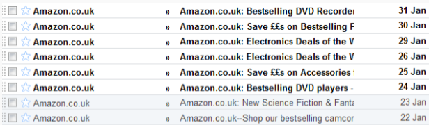
Is this too much email? Perhaps, but it’s targeted rather than ‘one size fits all’ and for this reason it stands a much better chance of converting.
2. Know your audience
Have you promised your subscribers daily sales? If so, you should email them daily!
Are you a B2B SaaS business? If so then sending emails every day during a free trial is more than like way too much.
Put yourself in your customers shoes and consider how often would you want to hear from yourself?
Many businesses give their customers options, putting the decision in THEIR hands. For example ScottEVest will send you daily sale emails if that’s what you sign up for:
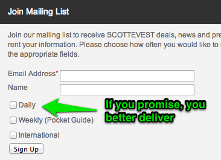
In short: uunderstand your audience and give them options.
3. Change the format of the emails you send
If you are sending a variety of different emails, make them FEEL different.
Keep things fresh by using different ‘from’ addresses and different templates to ensure your audience doesn’t get ’email fatigue’.
For example UserVoice send emails from the CEO, the product manager and the community manager as part of their welcome series:
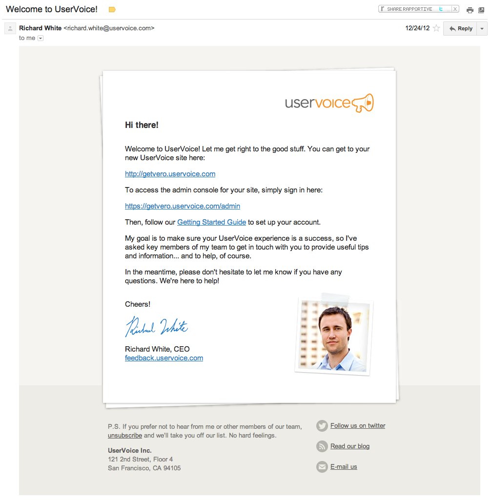
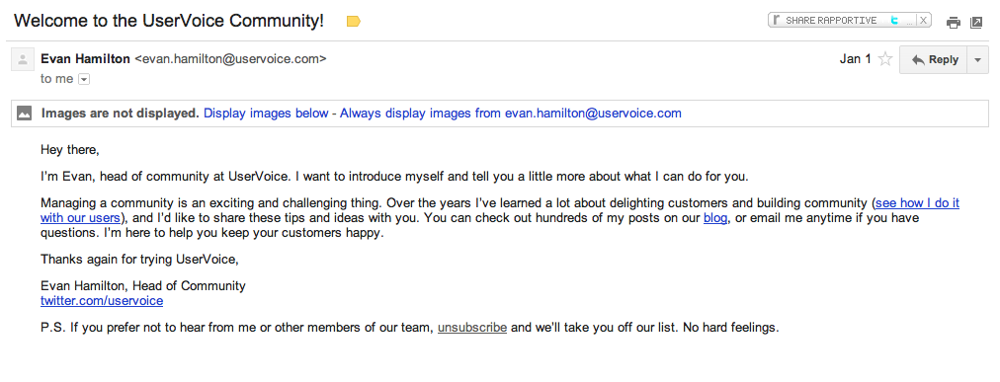
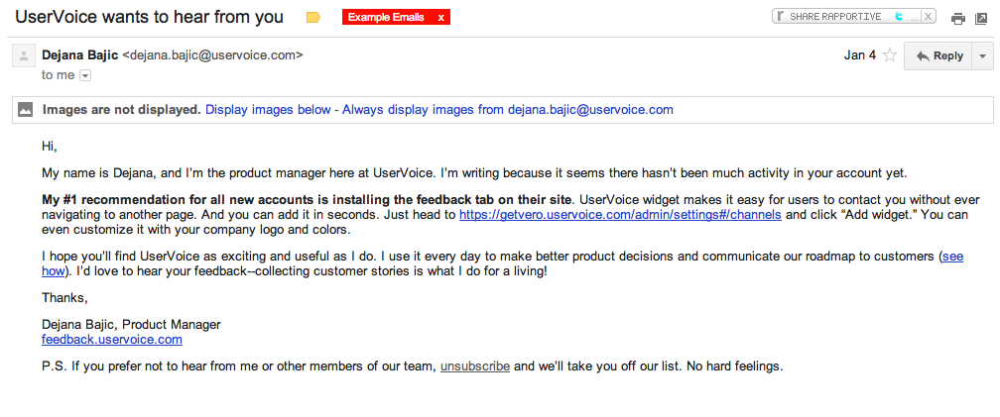
This helps increase the impact of each email.
4. Content can have a use-by date: keep it relevant
When was the last time you updated your automated campaigns?
I recently reviewed Vero’s welcome series (I do this every six weeks or so) and found a bunch of stuff I felt was no longer the best information I could be sending our new customers.
Is your target audience the same as it was six months ago? Has your angle changed?
You’re always learning, always gathering more data and always improving as a company. Take some time to review your campaign content and ensure they are kept up to date.
The guys at Buffer were inspiring recently when they spoke about how they have changed the focus of their own blog three times over the last two years. The content you’re sharing can change: make sure what’s in your emails is on topic with your goals.
It might be as simple as updating a template or adjusting your tone or as complex as re-writing entire series of emails.
Here’s an old template I was using:
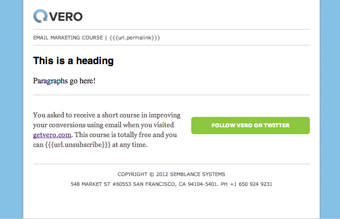
Here’s the new style we’re rocking:
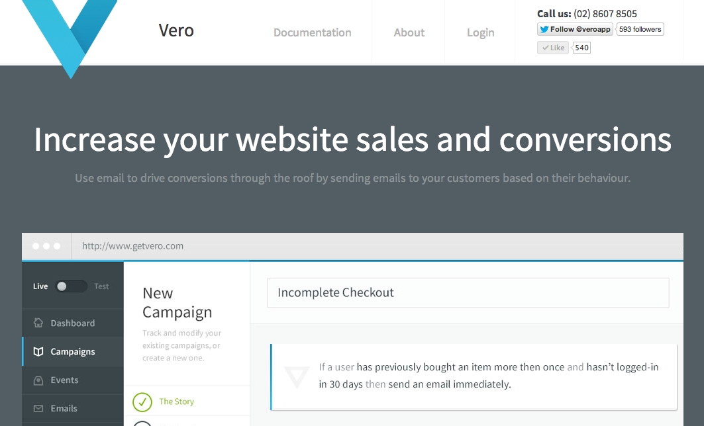
Clearly we were in need of an update!
Putting your campaigns on autopilot is fantastic but doesn’t mean you should forget them entirely!
5. Clone yourself: automate everything you can
As long as you automate something that is working effectively, it is always a win.
Regardless of whether you already have a bunch of great automated emails or whether you currently have NONE, here’s are a few points you should think about when setting up or reviewing previous automations:
1. Re-use what is working well in your manual campaigns
If you find yourself sending similar newsletter campaigns over and over then you’ve stumbled upon something worth automating.
This can also serve as inspiration for your content. If you send something and it has a particularly high response rate then you might incorporate the style or content into other, automated campaigns.
2. Use automated emails as part of direct sales
Even if you have put a lot of store in directly reaching out to potential customers, one-on-one, there is a lot you can do to streamline your efforts.
Take Optimizely who have a fantastic and intensive on-boarding process. They have a lot of enterprise customers and do a lot of phone and email follow-up for trial users. They do a great job of automating many of their follow-up emails and making it seems extremely personal. Check out this email:
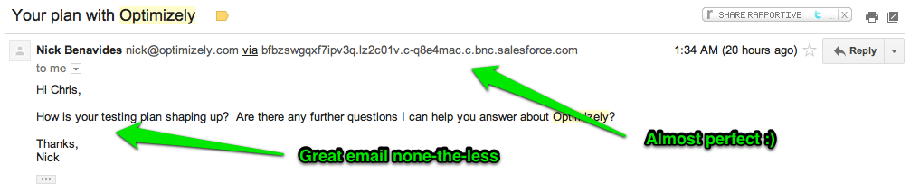
Spend time manually optimising your outreach and sales programs and automate them later. Check out this great article from Elizabeth Yin of LaunchBit
- Leverage new features and product development
What new features or elements have you added that you can use as hooks for trigger-based campaigns? Go even further: what can you add to make the most of email?
Here’s a great example from Twitter, who are currently testing a ‘Share by email’ feature:
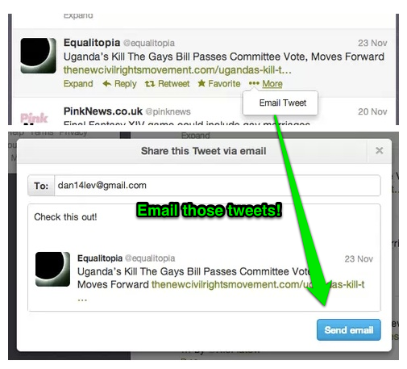
Another great example of behavioural email marketing at work is LinkedIn’s leverage of their new endorsements feature:
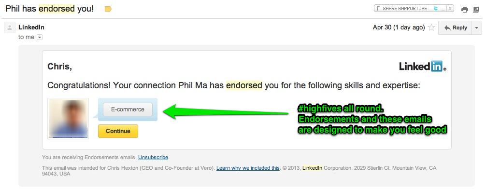
Spotify, Dropbox and lots of extremely successful online businesses make great use of emails like this. With tools like Vero you can now send smarter emails faster and more simply than ever. Want more examples like those from Twitter and LinkedIn? Check out this post on five market-leaders that really get email
6. How is your conversion tracking working?
One word here: Tag, tag, tag.
You want to tag EVERYTHING YOU CAN. Why? Tagging your URLs on social media, in emails, in paid ads and anywhere else you can will give you more power when digging through your analytics.
When sending emails it’s easy to use Google’s URL Builder and many tools will automatically tag any outgoing links for you. Make sure you check and turn this on in your email provider (in Vero it’s under the Account menu).
Once you’re tagging properly you can start to breakdown your attribution and really know what is working and where.
Here’s a screenshot of the sort of setup you can create in Google Analytics once you’re on top of this:
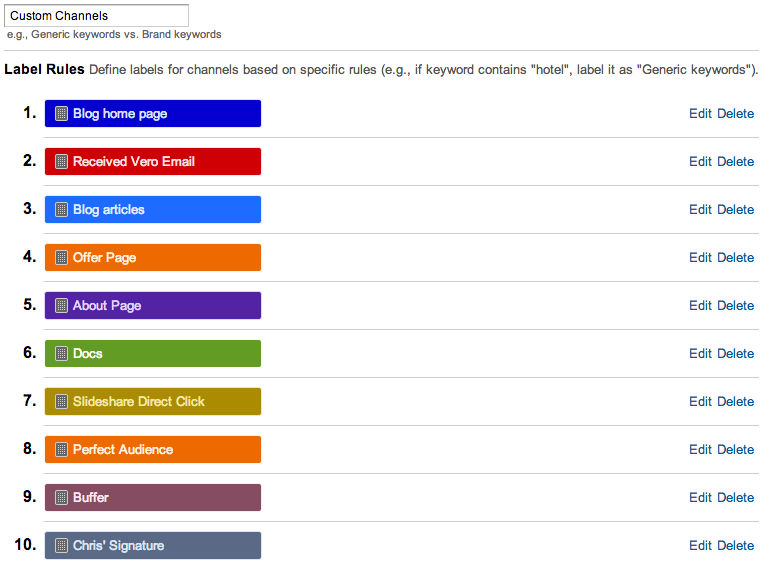
…and here’s the sort of thing this lets you see:
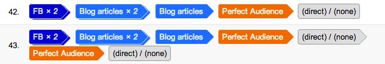
This stuff isn’t super easy to setup but it gives you real decision-making ability once you’ve got it right. Here is my favourite recent article on working with Google’s custom channel tags via SEOMoz. READ IT!
Further to this you should ideally be tracking actionable goals for all the emails you send. Not just opens and clicks but actual conversions.
Here’s an example of the sort of graphs I use to make decisions about email campaigns within Vero:
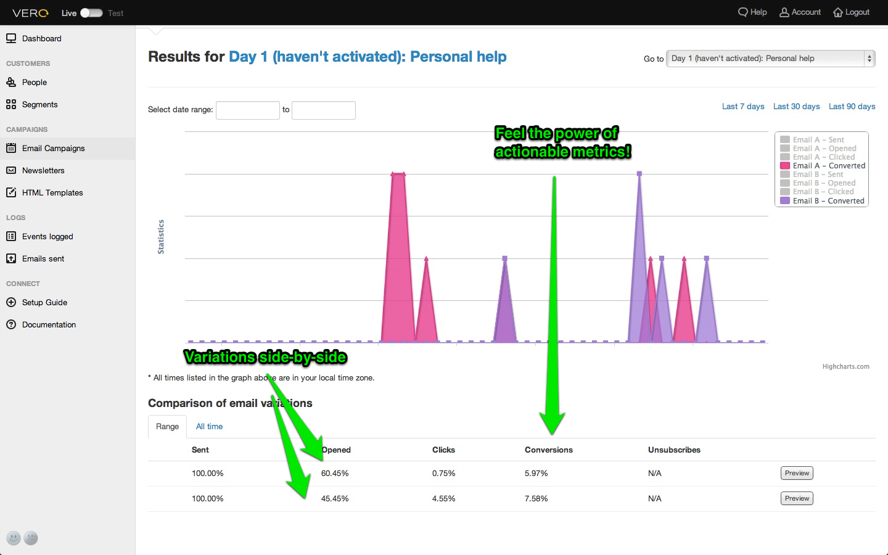
SPOILER: I have an epic post on attribution coming up in the third week of May. You need to read it or you’ll be wondering what on Earth is going on with your email, display, remarketing and other campaigns. Subscribe
Make sure you’re measuring data you can actually use, and use it.
7. Scrub away: clean your list
What’s more important? List size or list effectiveness?
Would you rather have 10,000 subscribers with an average of 1,000 opens or 2,000 subscribers with an average of 1,300 opens? It’s about engagement, not gross size.
At the end of the day you’re trying to connect with your customers and make more sales, not send more emails just for the sake of it. Emailing inactive subscribers constantly is not what you want to be doing.
So don’t get caught up on vanity metrics: focus on what’s important. List size is definitely a ‘vanity metric’. Here are three reasons you should remove inactive subscribers
- Actionable metrics. As I mention above, metrics are king: without them you’re flying blind. Even more importantly, they need to actionable to be useful.
Having a whole bunch of inactive subscribers on your list is actually giving you less actionable data as you cannot accurately tell how effective your tweaks and tests are.
How are your interested subscribers really responding to what you’re sending? It’s as simple as this: if you saw your campaigns had an 80% open rate would you act differently to if they had a 30% open rate? Of course you would! This knowledge can drastically influence what you test and your focus.
By cleaning your list you’ll get a true read on what works and what doesn’t.
- A friend mentioned to me recently that every day she gets email from [Company that won’t be named] and simply deletes them, whilst scowling that they won’t leave her alone. I asked why she hasn’t unsubscribed…she said she just gets lazy: it’s faster for her to delete them.
Whether or not that is what you’d do: it’s a true story. How many people are on your list like my friend? Do you think continuing to email customers who are just deleting your emails and getting frustrated is helping your brand and future prospects with these customers? Of course not!
It’s unlikely customers like this are going to buy again and probably even more unlikely every time you send them something.
- Who do you think is most likely to click the big ‘SPAM’ button at the top of their email client: the customer who enjoys receiving your emails…or the customer who is deleting them and frustrated daily?
On top of being bad for your brand’s image, continuing to send emails to disengaged customers will result in some clicking the SPAM button. Clicking the SPAM button is irrefutably bad for your email reputation.
Inactive subscribers in this instance are directly reducing your deliverability rate. Don’t let it happen!
SPOILER: Next week we’ve got a full post coming on deliverability, with all the ins and outs. Don’t miss it: subscribe.
The question then is HOW do you go about cleaning your list?
The two key points for identifying ‘inactive’ subscribers are:
- Look for exactly that: inactivity. Customers that have not opened, clicked, visited your site or taken any action whatsoever (downloaded something, purchased) are inactive.
- Define a cut-off point. If a customer hasn’t opened or clicked in 30 days, are they inactive? Or should the period be 90 days? This very much relates to the frequency of your emails and your customers’ purchase cycles. Use your good subscribers as an indication of what your ideal customers’ behavior looks like. Model your cut-off on this.
Once you’ve found them you should come up with a plan of attack, which leads nicely into step number two: put together a re-activation campaign!
8. Re-activate your current customers: they’re a gold mine!
Once you’ve identified the segments of your list that are inactive it’s time to take action.
You should start with re-activation. Your goal here is to get customers that have not recently been engaged to re-engage and become a viable selling prospect in the future!
Commonly there are inactive customers who have simply gotten tired of your emails, are funneling them off into a secondary (i.e. hardly looked-at) folder or who delete them day-in-day-out (like my good friend).
So what can you do? What are some re-activation strategies.
- “The cut-off” email. Email your customers and tell them you’ll be unsubscribing them tomorrow or in a few days. Don’t ask them to re-subscribe but do give them the option to do so. Anyone who re-subscribes is essentially giving you their permission again, which is awesome.
- Ask questions! Surveys can be a powerful tool, not just for getting feedback but for re-engaging customers. They’ll certainly help you determine who WANTS to be receiving your emails and have their say on your business and those who do not. Ensure you ask questions of REAL value. Remember from point two: recreate the value exchange.
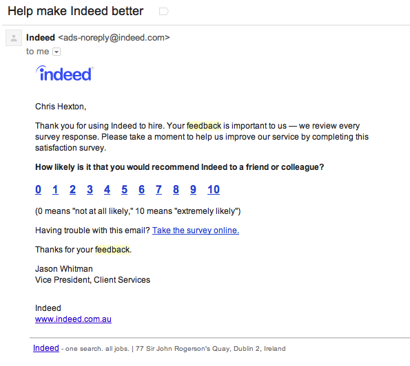
Indeed asking how likely you are to share with your friends. Even something simple like this can prompt user re-engagement.
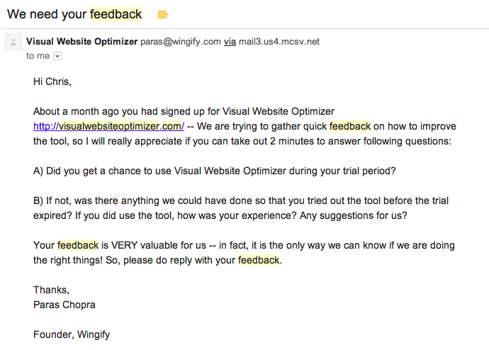
Visual Website Optimizer attempt to re-active trials that expire by emailing their customers these two questions.
- Offers. Here’s a strategy that you can appropriate, from the minds of direct-marketing pros like Frank Kern. Put together an offer you think will be enticing to customers: something that will at least get them to open, click and visit your site again (to purchase!).
Once you’ve decided on an offer you should setup a series of four emails that go out in series over 7 days. The first two should offer your customers something of value, the second should mention your offer is coming, the third should release the time sensitive offer and the fourth should follow-up with just hours to go. Your goal here is to renew the value-exchange promise with your customers and give them something of real value.
A glimpse into a different world perhaps, but useful to be aware of!
A pro tip:
If your list is of a reasonable size, test the strategy on a subset of the full inactive list. This will let you estimate the total effect and see if you can optimize before hitting your entire list.
Once you’ve identified the truly inactive subscribers, it’s time to let them go.
The master stroke:
Sometimes, the easiest way to know what to do is to look at what everyone else is doing and do the opposite.
Fab.com and LinkedIn both understand the power of keeping their customers engaged and aggresively unsubscribe email recipients when they detect they’re no longer active.

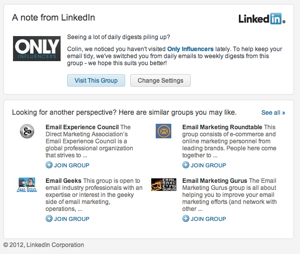
This is a great example of thought leadership when it comes to email marketing :).
Get cleaning!
These 8 tips and over 3,000 words of pointers should give you a go-to checklist any time you want to review the impact of your email marketing campaigns.
To make life easier, I also compiled this quick checklist broken down into four quadrants. If you like it and think it’s useful, please share.
What other tips do you have when reviewing your campaigns?